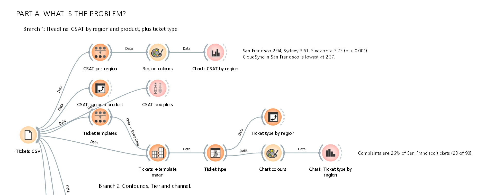
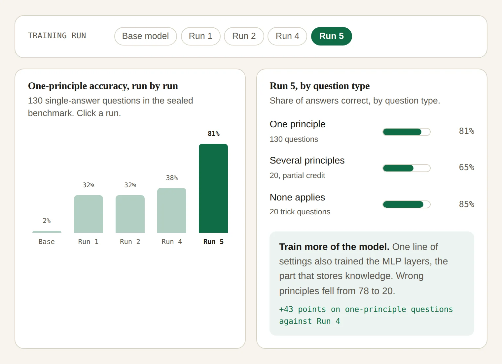

Using AI and data to support a decision, then automating the action list
A case study software company had one office with much lower customer satisfaction, and needed to decide whether to change its support staff or fix a product. I used AI text mining and statistics to answer that, working through 360 support tickets, 240 reviews and 280 customer profiles in Orange, then built the workflow behind an automated weekly action list that a person checks.
against 3.61 and 3.73
sentiment tool, against an 80% target
of the three I compared
- Check the data
- Rule out simpler causes
- Test the AI tools
- Build the action list
- A person checks every flag

The decision: a support problem or a product problem?
CloudCore Networks, the company in the case study, has support offices in San Francisco, Sydney and Singapore. Customer satisfaction in San Francisco was well below the other two. The Chief Operating Officer needed to know whether that was a support problem, which means changing staff and budget, or a product problem, which means fixing the product.
I wrote the report for that non-technical reader, and I interviewed two stakeholders, the Customer Support Lead and a Data Analyst, and turned their tests into the standards I used to judge each finding.
How I tested it
- Checked the data first. I looked for broken links between files, impossible values and duplicates, and found the ticket text was heavily standardised: only 48 distinct texts across 360 tickets.
- Protected privacy. I removed customer company names and reported only group averages.
- Ruled out simpler explanations. I checked support tier, contact channel and timing before blaming the office.
- Grouped the reviews into themes. I used TF-IDF and hierarchical clustering, comparing 5, 6 and 7 clusters before settling on six.
- Tested the sentiment tools. I compared two tools against the customers’ own scores, then stress-tested the chosen one with 13 adversarial sentences, including negation, sarcasm, polite complaints and threats to leave.
- Set a bar for each output based on what a wrong decision would cost, and placed each one on a trust and risk framework.
What I found
| Office | Satisfaction out of 5 |
|---|---|
| Singapore | 3.73 |
| Sydney | 3.61 |
| San Francisco | 2.94 (p < 0.001) |
| CloudSync in San Francisco | 2.37, from 30 tickets by 22 customers |
-
It points to the product, not the support team. San Francisco is lowest inside every product and every support tier, so tier, channel and timing don’t explain it. It logs 23 of 38 complaints with only about a quarter of the tickets, and its worst CloudSync tickets describe the product failing. None of them mention the support team.
-
Low satisfaction goes with losing customers. Customers who churned or were at risk scored 2.93 against 3.64 for those who stayed (p < 0.001), and 24 of the 50 San Francisco customers who logged tickets had churned or were at risk.
-
The sentiment tool failed the bar I set for it. It caught only 58% of unhappy tickets, and 52% in San Francisco, against an 80% target. It also read threats such as “considering AWS” as neutral.
So I advised against staffing or bonus changes, since that would have blamed staff for a product fault. I recommended fixing CloudSync’s reliability, starting in San Francisco, and changing how tickets are recorded and routed, so the customer’s own words are kept and product faults go to the product team. The sentiment tool should only point a person to tickets, never decide alone.
Automating the weekly action list
In the second part, my team of three pitched a fix: a weekly Orange workflow that flags the support tickets needing action, ranks them by how likely the customer is to leave, and has a person check every flag before it goes to the product team. I built the whole workflow, 86 widgets in three parts: the problem, testing the AI tools, and the action list.
- When a ticket is flagged: the customer scores it 1 or 2, or its words are negative and the customer’s churn risk is 50% or more.
- A person in the loop: the support lead removes false alarms with a reason, and a second reviewer checks those removals.
| What I tested | Result | Decision |
|---|---|---|
| Churn model, 10-fold cross-validation | Logistic Regression AUC 0.78, Neural Network 0.76, Decision Tree 0.59 | Logistic Regression, because it ranks customers best and its weights can be read |
| Sentiment tools against customer scores | Liu Hu correlation 0.69 and R² 0.47, VADER 0.56 and 0.31 | Liu Hu |
| Local LLM, qwen3:8b via Ollama, on all 360 tickets | Caught 37 of 38 unhappy tickets with no false alarms | Left out, because it added no tickets beyond the customer’s own score |
| Automation check | The saved list updated by itself when new tickets arrived, from 49 to 51 flags | Also found that brand-new wording silently shrank the list, from 49 to 39, and documented it |
I left the office out of the churn model, so it couldn’t favour or punish one office. The LLM ran on the laptop, so no customer data left the company.
-
The list points at CloudSync. The workflow flags 49 of 360 tickets, and 34 of them are CloudSync. Half of San Francisco’s CloudSync tickets need action, against 32% in Sydney and 17% in Singapore.
-
The extra checks find tickets the score misses. They add 9 CloudSync tickets, and 5 of those customers churned or are at risk.
-
The case study puts a size on it. In the case study data, San Francisco carries $134,270 a month from customers who churned or are at risk, 44% of the company total of $302,520 a month, while earning only 20% of revenue.
We proposed a 3-month pilot in San Francisco that needs no new software and no new staff, about 30 minutes a week for the support lead. The targets: the lead agrees with at least 80% of flags, San Francisco CloudSync tickets scored 1 or 2 fall from 43% to 25%, and satisfaction rises from 2.37 to 3.0.
How I worked
Let the evidence decide what goes in
The local LLM caught 37 of 38 unhappy tickets with no false alarms, but it found nothing the customer’s own score hadn’t already flagged. So I left it out of the design, on the evidence from the test.
What this can’t tell you
- CloudCore Networks is a case study company with a realistic dataset, not a real client.
- The revenue figures and targets are findings and projections, not results achieved in a real business.
- The ticket text was heavily standardised, with 48 distinct texts across 360 tickets, so the text tools had less real language to work with than real tickets would give them.
- The action list has a known failure case: brand-new wording can silently shrink it, which is why a person checks every flag.
What I did
The feedback analysis was my own work. The action list was a team project with Thi Kieu Oanh Ha and Shrey Chintankumar Panchal. In it, I:
- Built all of the Orange work, an 86-widget workflow.
- Wrote the solution and demonstration sections of the team proposal, and drove the report’s final structure.
- Recorded and voiced the 8-minute demo.
- Presented the live Orange demo in the 10-minute pitch, and answered questions on the workflow and the AI tools.
Links
